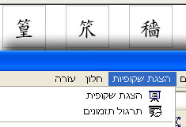

| Introduction |
| OpenOffice.org 1.1 - word
processor, spreadsheet application, presentation tool and more |
OpenOffice.org 1.1 is an
open, feature-rich multi-platform office productivity suite. The user interface
and the functionality is very similar to other products in the market like
Microsoft Office or Lotus SmartSuite, but compared to these commercial products
OpenOffice.org is absolutely free.
A full description of the application
can be found on the product pages at:
|
| Highlights |
| Word Processor |
|
OpenOffice.org Writer is a
full-featured word processor. The powerful Navigator and Stylist tools make
changing the formatting throughout a document a simple task. |
|
| Spreadsheet |
|
OpenOffice.org Calc
provides full spreadsheet functionality incl. a huge number of statistical and
scientific functions, pivot tables and charts. |
|
| Presentation Tool |
|
OpenOffice.org Impress is
a full-featured presentation tool that allows to create and modify diagrams and
pictures right within the application. |
|
| Drawings and Diagrams |
|
OpenOffice.org Draw is a
drawing tool that supports both vector and bitmap images. The powerful
Connectors allow to easily complex diagrams and org charts. |
|
| Database Access |
|
With the database tools in
OpenOffice.org users can easily access and analyze data, create complex reports
or do a mail merge based on a customer database. Many open source and
commercial database systems are supported. |
|
| Microsoft Office
Compatibility |
|
OpenOffice.org is able to
read and write Microsoft Office files. This allows users to open and save Word,
Excel and PowerPoint files on their preferred platform incl. Windows, Linux and
Solaris. |
|
| One-click Export to PDF |
|
OpenOffice.org 1.1
introduces the one-click PDF export feature that enables you to easily create
PDF files without the need for any additional third party software. This
feature makes exchanging documents in a standard "read-only" file format a
trivial task. The creation of PDF files normally requires relatively expensive
third party add-on tools. With OpenOffice.org this feature comes for free. |
|
| Export to Flash (.SWF) |
 |
OpenOffice.org now can
export presentations and drawings to the Macromedia Flash format (.swf). Thus,
it's now possible to view presentations in a simple web browser that has the
Flash plugin installed. Recipients and users of Flash presentations don't have
to install a special viewer anymore in order to view a presentation. |
|
| Accessibility |
 |
OpenOffice.org 1.1 can now
be used by handicapped people - for example people with sight problems.
OpenOffice.org 1.1 provides a high contrast mode, and together with additional
tools (see http://www.sun.com/access/)
it's even possible to use special entry devices. |
|
| Support for many native
languages |
|  |
OpenOffice.org 1.1
introduces functionality like bi-directional and vertical writing that is
required for many native languages. This allows OpenOffice.org 1.1 to be
translated into Japanese, Hebrew and many other languages that have
sophisticated text layout requirements. In addition the OpenOffice.org project
has an increasing number of
native-language
projects where users can access OpenOffice.org information in their native
language. |
|
| Open XML File Format |
|
The default file format in
OpenOffice.org is an open XML file format defined in a 500-page specification
document. Every OpenOffice.org file is a ZIP archive containing separate XML
files for the content, styles, settings and meta data. OASIS is using the
OpenOffice.org file format as the basis for the creation of a industry wide
standard for an open office document file format. For ordinary end users this
means that the content of documents can still be accessed and used even if
OpenOffice.org would go away. |
|
| API and File Format Compatible
with StarOffice 7[tm] Office Suite |
|
Since the
StarOffice 7[tm] Office Suite is
based on OpenOffice.org 1.1 both application suites are API and file format
compatible. Sun Microsystems, Inc., the founder and main sponsor of the
OpenOffice.org project, is providing support, training, enterprise tools and
services for the StarOffice 7 Office Suite. More details about the relationship
and the feature differences between OpenOffice.org and the StarOffice product
can be found in
a
comparison document on the OpenOffice.org page at sun.com. Other
office suites that are API and file format compatible with OpenOffice.org will
soon be listed on the OpenOffice.org website. In order to get your
OpenOffice.org based/compatible product included in that list please contact
Erwin Tenhumberg or
Louis Suarez-Potts. |
|
| Macro Recorder |
|
The new macro recorder
records and automates recurring tasks. For more sophisticated programming tasks
the OpenOffice.org Software Development Kit (SDK) can be used. The SDK provides
libraries, tools and documentation for the Java programming language, C++,
Basic, OLE and XML. The SDK is a separate download. |
|
| 3rd Party Add-ons |
|
The new add-on framework
and the new deployment tool (the "pkgchk" utility) allow developers to easily
include new components and 3rd party add-ons into an existing OpenOffice.org
installation. |
|
| XML File Filter Tool |
|
The new XML file filter
tool makes it easy to integrate new import or export file filters that are
based on XSL transformations. A popular use case for the XML filter tool is the
support for the new Microsoft Office 2003 XML file formats. |
|
| ActiveX Control |
|
OpenOffice.org 1.1 comes
with an ActiveX control that allows users to view OpenOffice.org documents
within a browser window (Internet Explorer) on the Windows platform. The
ActiveX control can also be used within native applications developed in
Microsoft VisualBasic or Borland Delphi. |
|
| Support for DocBook and PDA File
Formats |
|
OpenOffice.org allows
users to export OpenOffice.org documents to popular file formats like DocBook
or various small device file formats like AportisDoc. This gives users the
possibility to carry their documents with them on their Palm Pilots and Pocket
PC PDA's. |
|
| MySQL Integration |
|
OpenOffice.org now has
support for MySQL databases, i.e. the open source database can be used for mail
merge activities and the creation of reports. The combination of OpenOffice.org
and MySQL (or another supported database) allows users to do tasks that many
people used to solve by using products like Microsoft Access. |
|
| More
Information |
| Complete OpenOffice.org 1.1
Feature List |
|
|
| OpenOffice.org 1.1 Product
Page |
|
|
| OpenOffice.org 1.0.x
Features |
|
|
| OpenOffice.org Download
Central |
|
|
|


{kind=link}
{kind=link}
{kind=link}
{kind=link}
{kind=link}
{kind=link}
{kind=link}
{kind=link}
{kind=link}
{kind=link}
{kind=link}
{kind=link}
{kind=link}
{kind=link}
{kind=link}